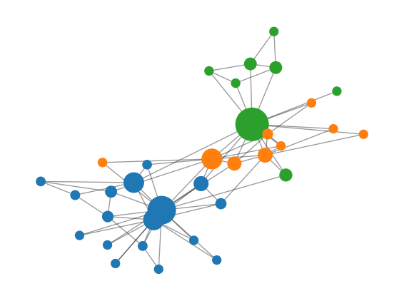

N = 34, E = 78, <k> = 4.59
average clustering = 0.571
average path length = 2.408
3 communities, Q = 0.411Module 5: Complex Networks
A network (or graph) \(G = (V, E)\) is a set of \(N = |V|\) nodes and a set of \(E = |E|\) edges that join pairs of nodes (newman2003structure?). In Module 1 you modelled an epidemic with ODEs that assume every individual meets every other one. A network drops that assumption: interactions happen only along edges.
Mean-field ODEs such as \(dS/dt\), \(dI/dt\), \(dR/dt\) assume homogeneous mixing: every individual meets every other one with equal probability (Keeling and Rohani 2008). Real contact patterns are not homogeneous:
In Module 2 geometry decided who interacts with whom: metric distance, vision cones, neighbourhoods. Here a graph decides it. You keep the same simulation mindset, and local rules in space become local rules along edges. The themes stay the same: heterogeneity, hubs, robustness and emergent outcomes. On a network you can relate degree heterogeneity and centrality to robustness and to epidemic thresholds.
For an undirected, unweighted graph, the adjacency matrix has \(A_{ij} = 1\) if nodes \(i\) and \(j\) share an edge and \(A_{ij} = 0\) otherwise. The degree of node \(i\) is
\[ k_i = \sum_{j} A_{ij}, \qquad \langle k \rangle = \frac{1}{N}\sum_i k_i = \frac{2E}{N}. \]
The degree distribution \(p_k\) is the fraction of nodes with degree \(k\). Its second moment \(\langle k^2 \rangle = \sum_k k^2 p_k\) appears in every result of this module: percolation, cascades and epidemic thresholds all depend on how broad \(p_k\) is (newman2003structure?). Many real networks have right-skewed degree distributions, sometimes close to a power law \(p_k \sim k^{-\gamma}\) with \(2 < \gamma < 3\) (newman2003structure?).
A path is a sequence of edges that joins two nodes. The distance \(d_{ij}\) is the length of the shortest path. The average path length \(\ell\) averages \(d_{ij}\) over all pairs, and the diameter is the largest \(d_{ij}\). In many real networks \(\ell\) is small and grows slowly (about logarithmically) with \(N\). This is the small-world effect (newman2003structure?; Watts and Strogatz 1998).
The local clustering coefficient of node \(i\) is
\[ C_i = \frac{\text{number of edges among the neighbours of } i}{k_i (k_i - 1)/2}. \]
It measures how often two neighbours of \(i\) are also neighbours of each other. Social networks tend to have much higher clustering than a random graph with the same \(N\) and \(E\) (Watts and Strogatz 1998; newman2003structure?).
Centrality measures rank nodes by importance. Each one encodes a different idea of “important” (Newman 2018):
A community is a group of nodes with many edges inside the group and few edges to the rest of the network (girvan2002community?). A common quality score is the modularity
\[ Q = \frac{1}{2E}\sum_{ij}\left(A_{ij} - \frac{k_i k_j}{2E}\right)\delta(c_i, c_j), \]
which compares the edges inside communities with the number expected in a random graph with the same degrees (Newman 2018). Here \(c_i\) is the community of node \(i\).
Figure 1 shows Zachary’s karate club, a social network of 34 club members (zachary1977information?). Node size is proportional to betweenness and colours show the communities found by greedy modularity maximization.

N = 34, E = 78, <k> = 4.59
average clustering = 0.571
average path length = 2.408
3 communities, Q = 0.411Nodes 0 and 33 are the instructor and the club administrator. Predict their rank by degree and by betweenness. Then check with nx.degree_centrality and nx.betweenness_centrality.
Nodes 0 and 33 take the first two places in both rankings. Node 33 has the largest degree, and node 0 has the largest betweenness because many shortest paths between the two groups pass through it.
bc = nx.betweenness_centrality(G)
dc = nx.degree_centrality(G)
print(sorted(bc, key=bc.get, reverse=True)[:3])
print(sorted(dc, key=dc.get, reverse=True)[:3])The toolkit pages, from NetworkX Basics to Centrality in NetworkX, show how to compute every quantity on this page.